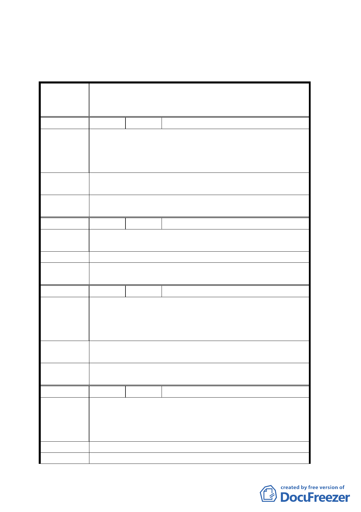

三、公民或團體所提意見審決如后附綜理表。
臺北市都市計畫委員會公民或團體所提意見綜理表
變更臺北市信義區信義段五小段二八之二、二八之
案名 三地號住宅區為機關用地(供臺北市政府所屬各機
關使用)計畫案
編號
１ 陳情人 黃宏正等一六六人
信義段五小段二八之二、二八之三地號之市有土地（地政
陳情理由
處土地重劃大隊）有意在此興建市府行政大樓，三張里及
三犂里里長以及當地眾多里民非常支持而且歡迎這個開發
案，自動發起簽名連署活動。
建議辦法
希望儘快把二八之二、二八之三地號住宅用地變更為機關
用地。
委員會議決
議
錄案供參。
編號
２ 陳情人 楊淑嬌
陳情理由
興建辦公大樓外開放空間可做為當地里民休閒散步好場
所。
建議辦法 非常歡迎市政府地政處住宅用地儘快變更為機關用地。
委員會議決
議
錄案供參。
編號
３ 陳情人 羅仕彬
興建市府行政大樓基本所需外，亦能把里民想併入規劃的
陳情理由
閱覽室規劃進去，市政府如此的敦親睦鄰，當地眾多里民
非常的高興而且歡迎，希望儘快興建行政大樓與我們做鄰
居，增加此地文教設施的不足。
建議辦法
希望把地政處（土地重劃大隊）信義區信義段五小段二八
之二、二八之三地號之住宅區用地變更為機關用地。
委員會議決 錄案供參。
議
編號
４ 陳情人 周建勇等十七人
座落台北市信義段五小段二八之二、二八之三地號土地二
陳情理由
筆係以申請人所有台北市松山區三張犁段七八地號等十一
筆土地予以重劃後之抵費地，依法應予標售，不得由重劃
單位擅自做其他用途，而損害申請人之權益。
建議辦法 應依法標售，以維申請人之權益。
委員會議決 本案係依「平均地權條例施行細則」第八十四條、「市地重
五